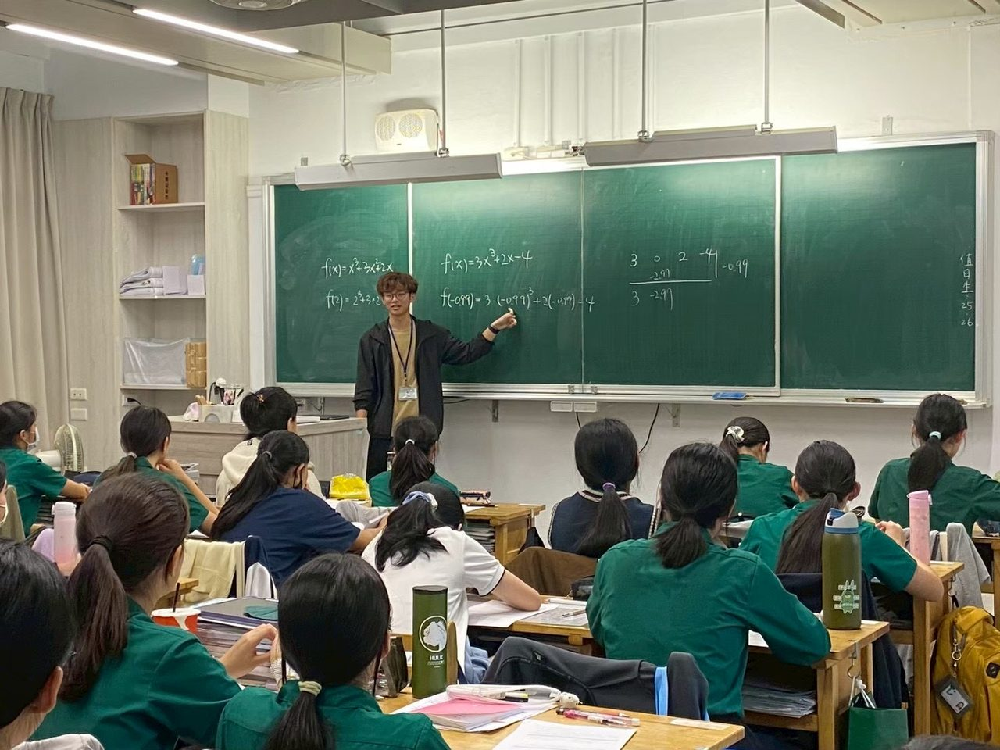
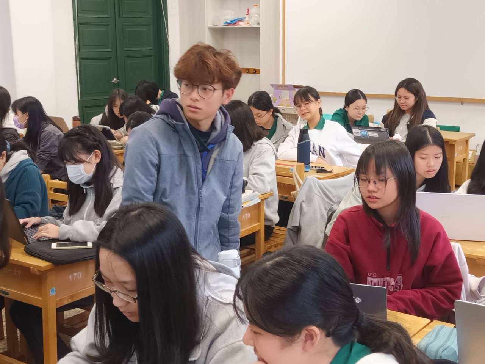
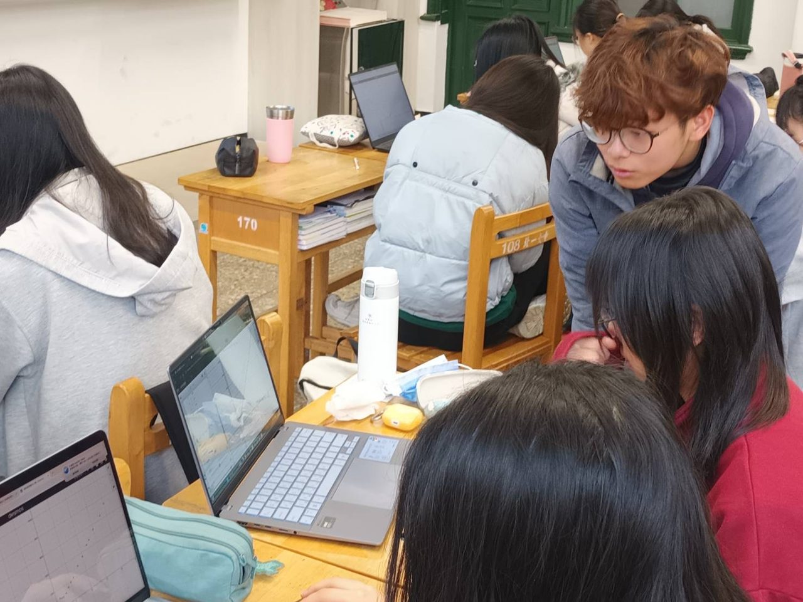
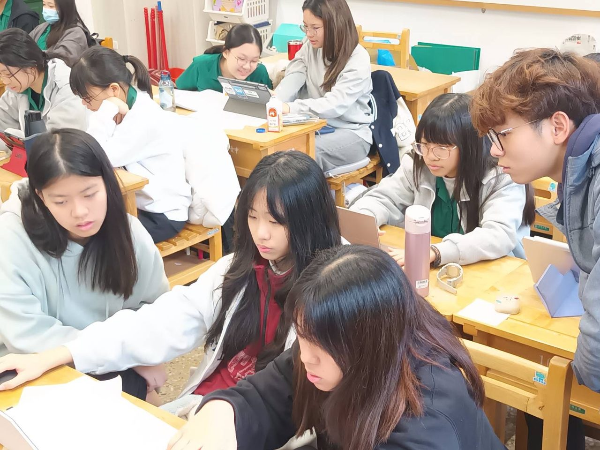
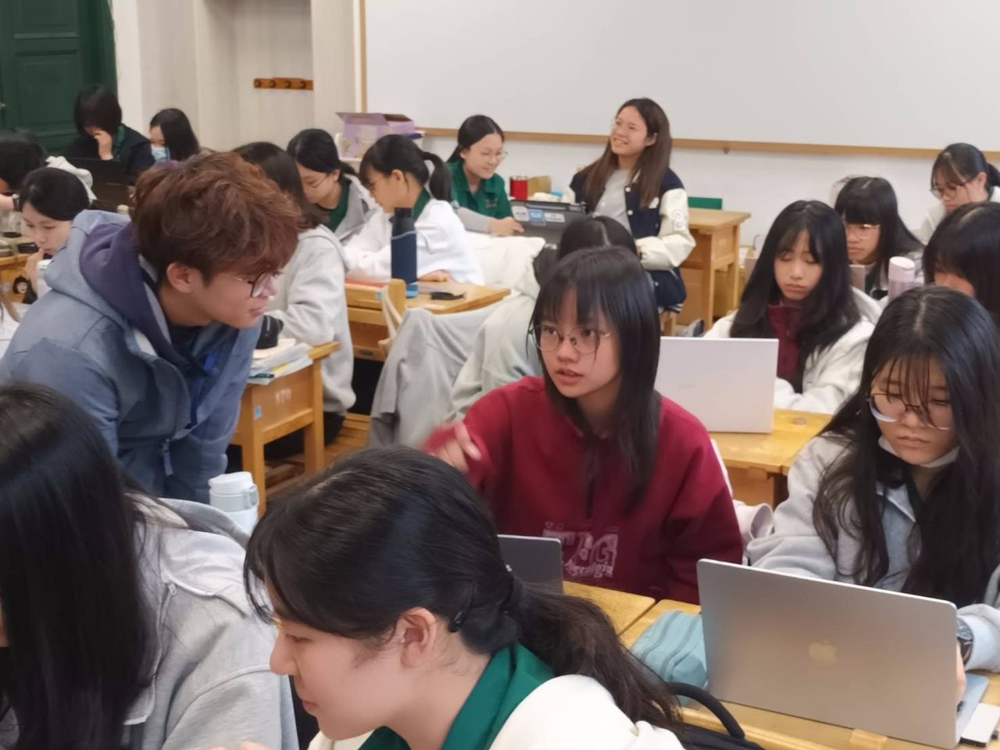
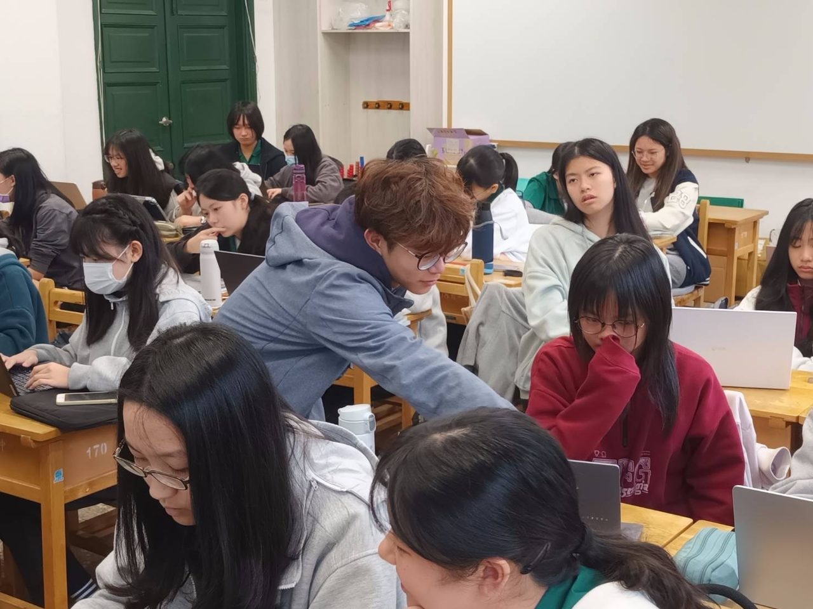

Education
國立臺灣大學・數學系
以數學專業訓練為基礎，並投入中等教育師資培育與教學實務。
AUTOBIOGRAPHY
沿用過往履歷的核心內容，改寫為適合網頁閱讀的版本。
我希望學生學到的不只是某一題的做法，而是能真正理解觀念，並把抽象內容整理成可理解、可練習、也可再次運用的系統。
我以數學專業作為學習與教學的核心，並持續投入中等教育師資培育與教學實務。從自己的數學學習經驗中，我逐漸發現，我真正感興趣的不只是把答案算出來，而是理解一個概念如何被建立、不同知識之間如何連結，以及如何用更清楚的方式把這些想法說給別人理解。這也成為我持續投入數學教學與教材設計的重要原因。
過去的教學經驗涵蓋家教、補習班個別指導與團體班，以及高中教學實務，接觸的學生從國小到高中都有。不同學生遇到的困難往往不同：有些學生需要重新建立計算習慣，有些是前置概念出現斷層，也有些學生其實具備能力，卻尚未形成適合自己的思考與整理方式。因此，我會先找出學生真正卡住的位置，再決定要從計算、圖像、概念或題目切入。
我的課堂通常會從故事、情境或問題出發，先建立核心概念，再將觀念帶入解題；完成題目之後，會重新整理這一類問題背後的想法、公式與解法之間的關係。我希望學生逐漸知道「為什麼這樣做」，而不是只記住「老師剛才怎麼做」。對我而言，真正重要的是學生能在下一次遇到陌生問題時，仍有方法重新找到可以前進的方向。
教學對我而言也是持續學習的過程。除了數學內容本身，我也持續整理講義、設計題目與評量，並思考板書、簡報、數位筆跡與多媒體如何更貼近實際課堂節奏。我希望自己成為一位兼顧數學專業、學生理解與互動的教師，也透過這個網站留下教學作品、反思與專業成長的紀錄。
RESUME
將學歷、師資培育與不同教學場域分開呈現，方便家長、學校或合作單位快速閱讀。
以數學專業訓練為基礎，並投入中等教育師資培育與教學實務。
累積教案設計、課堂觀察、教材準備、教學演示與班級互動經驗。
年級涵蓋國小至高中，內容包括校內進度、段考、會考、學測、分科與數學能力建立。
具有個別指導與團班授課經驗，也接觸升學複習、科學班與程度差異較大的學生。
曾接觸特教扶弱與數理資優相關教學情境，持續累積不同學生需求的教學經驗。
TEACHING PHILOSOPHY
先讓學生理解為什麼會需要這個數學概念，而不是一開始只看到公式。
用圖像、例子與簡單的語言把抽象概念具體化。
由基本題進入變化題，練習選擇方法，而不是模仿固定步驟。
把公式、題型與想法重新接起來，形成之後能再次取用的學習脈絡。
PORTFOLIO
目前先以課程主題呈現；之後可逐步加入講義 PDF、教案、考卷與示範影片。
TEACHING RESULTS
採客觀方式記錄學生學習成果，不以成果作為保證式宣傳。
曾協助國三學生進行數學加強與升學準備，學生錄取上述學校。
曾由高一內容重新複習，協助學生補強核心概念、建立複習順序與考試策略。
曾協助學生進行分科數學複習與觀念補強，完成升學目標。
學習成果受學生原有程度、投入時間與學習狀況等因素影響，以上僅作為過往教學經驗紀錄。
TEACHING NOTES
未來可以把教學心得、數學文章、研習心得與數位教學紀錄放在這裡。
TEACHING MOMENTS
從全班講解、巡迴指導到小組討論，記錄實際課堂中與學生共同思考、釐清問題的過程。






CONTACT
若想討論教學、課程合作或數學教育相關議題，歡迎聯絡。
聯絡方式公開前補上